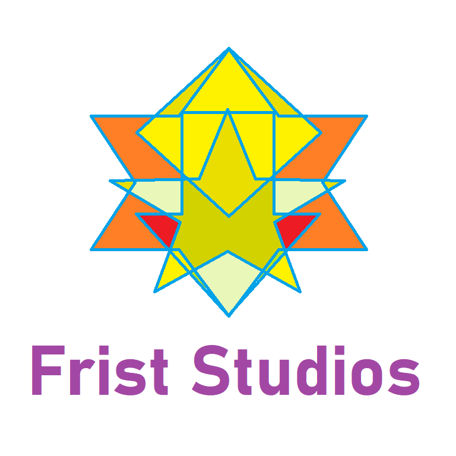

(or FG for short)
Welcome Guardian
Fortress Guardian is first-person tower defense game, where you defend your fortress against continuous waves of enemies.
Story:
Embark on a journey through the beautiful land of Romardia. In the past years Romardia's fortresses are getting invaded by hordes of ruthless enemies.
Connect with Eldin, the oldest and wisest fortress guardian on the entire continent. Are you ready to become a fortress guardian yourself? Are you powerful enough to protect the Ruhitia Crystal from ruthless enemies?
Features:
Fully procedural wave generation system
Multiple maps spanning across diverse environments
Multiple enemies & buildings with unique abilities
Complex saving & profile system
4 difficulties
in-game wikipedia & tutorial
2 game modes